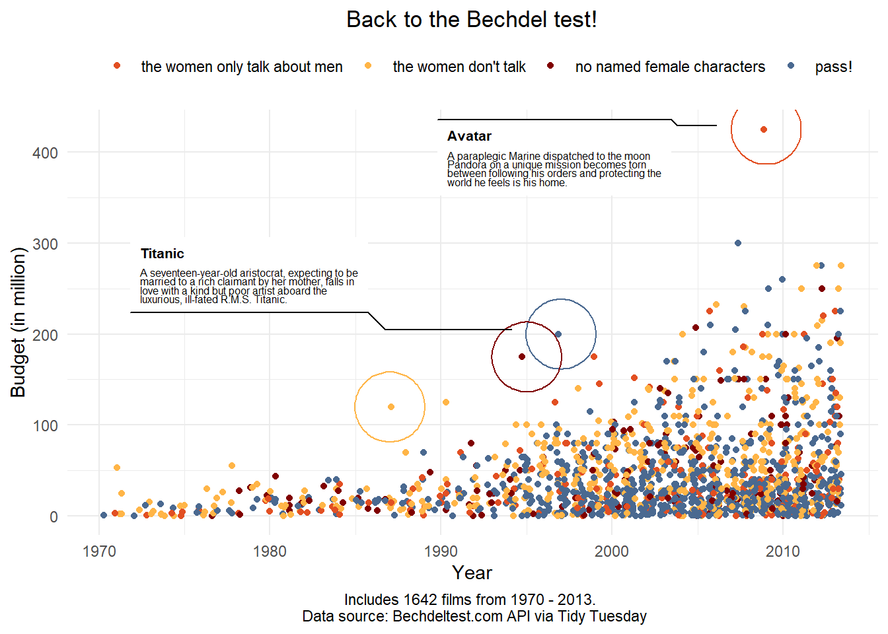

# A tibble: 943 × 34
student_id subject semester section total_po…¹ total…² propo…³ gender enrol…⁴
<chr> <chr> <chr> <chr> <dbl> <dbl> <dbl> <chr> <chr>
1 43146 FrScA S216 02 1217 1150 0.945 F Course…
2 44638 OcnA S116 01 1676 1384. 0.826 M Course…
3 47448 FrScA S216 01 1232 1116 0.906 F Other
4 47979 OcnA S216 01 1833 1493. 0.814 M Course…
5 48797 PhysA S116 01 2225 1995. 0.897 M Learni…
6 51943 FrScA S216 03 1222 70 0.0573 M Learni…
7 52326 AnPhA S216 01 1775 1519. 0.855 F Other
8 52446 PhysA S116 01 2225 2198 0.988 F Learni…
9 53447 FrScA S116 01 1212 1173 0.968 F Course…
10 53475 FrScA S116 02 1212 0 0 F Course…
# … with 933 more rows, 25 more variables: enrollment_status <chr>,
# time_spent <dbl>, time_spent_hours <dbl>, course_id <chr>, int <dbl>,
# val <dbl>, percomp <dbl>, tv <dbl>, q1 <dbl>, q2 <dbl>, q3 <dbl>, q4 <dbl>,
# q5 <dbl>, q6 <dbl>, q7 <dbl>, q8 <dbl>, q9 <dbl>, q10 <dbl>, date_x <dttm>,
# post_int <dbl>, post_uv <dbl>, post_tv <dbl>, post_percomp <dbl>,
# date_y <dttm>, date <dttm>, and abbreviated variable names
# ¹total_points_possible, ²total_points_earned, ³proportion_earned, …ggplot
extended and beyond…
1 GGPLOT Extended
1.0.1 Load data and libraries
We will load the following packages
Tidyverse (we will use tidyr, dplyr, and ggplot)
here (to pull the data from its absolute path)
We will continue using our “data_to_explore.csv” file. This is the one that we wrangled from three different data frames; log files, grade data and survey data originally form Macfadyen, L. P., & Dawson, S. (2010). “Mining LMS data to develop an early warning system for educators: A proof of concept.”
2 Wrangle the data frame
I dropped NA’s in proportion earned and time spent in hours. I also rename the subject names to their full course name. Finally, I created a whole grade point from the proportion earned by multiplying the percentage points by 100.
3 Visualizations
3.1 Grouping features(variables)
To group together features you must have a categorical feature - factor or character class. If it is not, then you will need to convert using ‘as. character()’

3.1.1 Group by subset and change graph scale
Here we are going to subset right in ggplot to only look at 3 subjects trend lines compared to the trend line of all of the subjects, specifically the points earned for amount of time spend in the online LMS.
3.1.2 Add a shape
Below we are grouping by gender to show the gender we will use filled triangles and filled circles. Shape numbers & symbols that are shown in the R Graphics book.
.png)
3.1.3 Specify shape with scale_shape_manual
Here we are adding a new function so that we can choose the shape
4 Use Plotly
We can make our graphs interactive with the Plotly package. Use your mouse to scroll over the data points. We see the the hours spent by the grade earned.
4.1 Add Color to the Plotly graph
Just like with ggplot we can color our data points by variable. We can see that the subjects are denoted by color.
4.2 Use Shape
Again, like in ggplot you can parse by a shape style.
Code
#| echo: false
#| warning: false
#| message: false
ia_fig3 <- plot_ly(new_df, x = ~time_spent_hours, y = ~grade, type = 'scatter',
mode = 'markers', symbol = ~subject, symbols = c('circle','x','o'),
color = I('black'), marker = list(size = 10))
ia_fig34.3 Create interactive with ggplot object
We will use our originally saved gg_viz data and change to a plotly interactive object.
5 Annotate
We will now learn to annotate on the graph. Below you will see that we can use the annotate() to write out information. By including you can go to the next line.
5.1 Draw an arrow
You can draw an arrow calling the x and y and always including xend and yend.
6 Annotations with {ggforce} - the next session was adopted RLadies of Frieborn
This package offers some more annotation options: - geom_mark_rect() encloses the data in the smallest enclosing rectangle - geom_mark_circle() encloses the data in the smallest enclosing circle - geom_mark_ellipse() encloses the data in the smallest enclosing ellipse - geom_mark_hull() encloses the data with a concave or convex hull - the {concaveman} package is required for this geom
6.1 filter by Anatomy by gender
Code
#| echo: false
#| warning: false
#| message: false
library(ggforce)Warning: package 'ggforce' was built under R version 4.2.1Code
new_df %>%
filter(subject == "Anatomy")%>%
drop_na(time_spent_hours, grade) %>%
ggplot() +
aes(time_spent_hours, grade) +
geom_mark_circle(aes(fill = gender)) +
geom_point()For this part, we’ll look at data about almost 1800 films and whether they pass the Bechdel test (i.e.: are there two named female characters in the film who talk to each other about a topic that’s not a man):
Code
#| echo: false
#| warning: false
#| message: false
movies <- readr::read_csv('https://raw.githubusercontent.com/rfordatascience/tidytuesday/master/data/2021/2021-03-09/movies.csv')Rows: 1794 Columns: 34
── Column specification ────────────────────────────────────────────────────────
Delimiter: ","
chr (24): imdb, title, test, clean_test, binary, domgross, intgross, code, d...
dbl (7): year, budget, budget_2013, period_code, decade_code, metascore, im...
num (1): imdb_votes
lgl (2): response, error
ℹ Use `spec()` to retrieve the full column specification for this data.
ℹ Specify the column types or set `show_col_types = FALSE` to quiet this message.Code
mov <- movies %>%
mutate(title = str_replace(title, "'", "'"),
intgross = as.numeric(intgross),
budget = budget/1000000) %>%
filter(clean_test != "dubious") %>%
drop_na(year, budget, intgross, clean_test) %>%
mutate(clean_test = fct_recode(clean_test,
"no named female characters" = "nowomen",
"the women don't talk" = "notalk",
"the women only talk about men" = "men",
"pass!" = "ok"))Warning in mask$eval_all_mutate(quo): NAs introduced by coercionCode
(bechdel <- mov %>%
ggplot() +
aes(x = year, y = budget, colour = clean_test) +
geom_jitter() +
labs(title = "Back to the Bechdel test!",
x = "Year", y = "Budget (in million)",
colour = "",
caption = "Includes 1642 films from 1970 - 2013. \n Data source: Bechdeltest.com API via Tidy Tuesday") +
scale_color_manual(values = c("#e24f22", "#FFB547FF", "#800000FF", "#4A6990FF")) +
theme_minimal() +
theme(legend.position = "top",
plot.title = element_text(hjust = 0.5),
plot.caption = element_text(hjust = 0.5)))6.2 Labelling single data points
If we want to label specific data points, we can filter them within geom_mark_circle(). The label will be the film’s title, but we can also add a description, for which we’ll pick the plot summary:
Code
#| echo: false
#| warning: false
#| message: false
bechdel +
geom_mark_circle(aes(label = title,
filter = title %in% c("Avatar", "Waterworld", "RoboCop", "Titanic"),
description = plot),
expand = unit(7, "mm"),
label.lineheight = 0.7,
label.fontsize = c(8, 6),
show.legend = FALSE)
6.3 One more
See the blue point that is higher than all the rest, between year 2000 and 2010? Find the title of that film using a filter command (hint, use the mov df and the columns budget and clean_test), then add a circle to the plot that identifies it by title. If you have time, also find the highest yellow dot between 1975 and 1980, and circle it too!
# A tibble: 2 × 34
year imdb title test clean…¹ binary budget domgr…² intgr…³ code budge…⁴
<dbl> <chr> <chr> <chr> <fct> <chr> <dbl> <chr> <dbl> <chr> <dbl>
1 2009 tt04995… Avat… men-… the wo… FAIL 425 760507… 2.78e9 2009… 4.61e8
2 2007 tt04490… Pira… ok pass! PASS 300 309420… 9.61e8 2007… 3.37e8
# … with 23 more variables: domgross_2013 <chr>, intgross_2013 <chr>,
# period_code <dbl>, decade_code <dbl>, imdb_id <chr>, plot <chr>,
# rated <chr>, response <lgl>, language <chr>, country <chr>, writer <chr>,
# metascore <dbl>, imdb_rating <dbl>, director <chr>, released <chr>,
# actors <chr>, genre <chr>, awards <chr>, runtime <chr>, type <chr>,
# poster <chr>, imdb_votes <dbl>, error <lgl>, and abbreviated variable names
# ¹clean_test, ²domgross, ³intgross, ⁴budget_2013# A tibble: 2 × 34
year imdb title test clean…¹ binary budget domgr…² intgr…³ code budge…⁴
<dbl> <chr> <chr> <chr> <fct> <chr> <dbl> <chr> <dbl> <chr> <dbl>
1 1978 tt00783… Supe… nota… the wo… FAIL 55 134218… 3.00e8 1978… 1.96e8
2 1971 tt00677… Shaft nota… the wo… FAIL 53.0 703278… 1.07e8 1971… 3.05e8
# … with 23 more variables: domgross_2013 <chr>, intgross_2013 <chr>,
# period_code <dbl>, decade_code <dbl>, imdb_id <chr>, plot <chr>,
# rated <chr>, response <lgl>, language <chr>, country <chr>, writer <chr>,
# metascore <dbl>, imdb_rating <dbl>, director <chr>, released <chr>,
# actors <chr>, genre <chr>, awards <chr>, runtime <chr>, type <chr>,
# poster <chr>, imdb_votes <dbl>, error <lgl>, and abbreviated variable names
# ¹clean_test, ²domgross, ³intgross, ⁴budget_20137 Blurring data points with {ggfx}
This package offers a variety of filters - here’s an overview: https://www.r-bloggers.com/2021/03/say-goodbye-to-good-taste/
We’ll use the with_blur() command here. To draw attention to a specific group within the data, we can draw circles as we did earlier, but alternatively, we can blur the data we don’t want to highlight. To achieve that, we need to wrap the geom_jitter() command in with_blur():
We can also blur other plot elements in theme:
Code
#| echo: false
#| warning: false
#| message: false
bechdel +
theme(plot.caption = with_blur(element_text(), sigma = 2))Code
bechdel +
theme(legend.text = with_blur(element_text(), sigma = 2))8 Zooming in
Finally, we might want to zoom in on a range or a group of data points. The facet_zoom() command achieves just that: